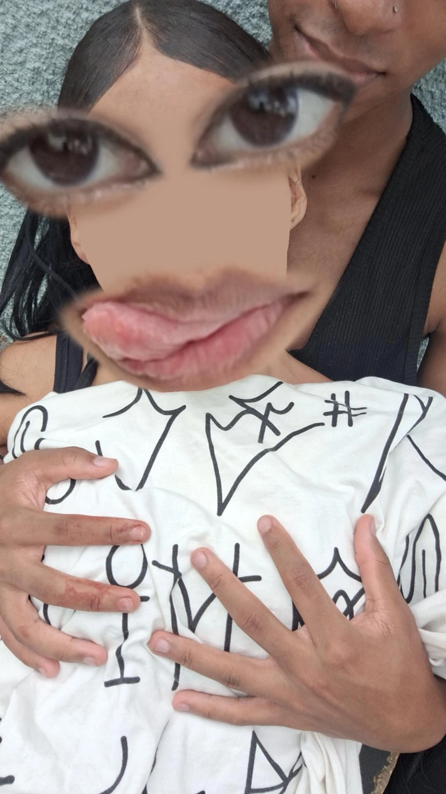

13/10/24 Minha linda mesmo sem te conhecer, já sinto tua energia, Como se o brilho dos teus olhos já me fosse familiar, Tem algo em ti que carrega uma vibe intensa, Uma força que me puxa, sem eu nem te olhar. Te imagino com a elegância de uma rainha, Tipo Cleópatra, sem precisar dizer nada, Tens esse jeito de despertar desejo e mistério, Mesmo de longe, já me deixas intrigado. Ainda nem vi teus gestos, mas já os sinto, Imagino que seriam suaves, mas cheios de intenção, E o toque que ainda não provei já me chama, Como se só a ideia de ti já acelerasse meu coração. Sem nunca te ver, já me sinto atraído, Como se o destino já soubesse onde isso ia dar, Porque, assim como Cleópatra, conquistas sem aparecer, E já tens meu interesse, sem nem precisar tentar.

Minha garotinha Te amar é o melhor sentimento que existe, se bem quando estou ao seu lado sinto os sentimentos mais inexplicáveis que existem, mas tão bom. Antes eu não entendia o que era o "amor" mas depois da sua chegada tudo ficou mais claro, e passei a entender mais sobre esse sentimento incrível e tão maravilhoso. Amar alguém é você estar ao lado da pessoa, amá-la mesmo em suas tempestades, ajudá-la a curar feridas passadas e fazê-la feliz ao máximo. Amar alguém é você deixar algumas de suas necessidades de lado, para fazer a vontade dessa pessoa para vê-la feliz. Amar alguém é você estar com ela quando ela mais precisar, quando ela acordar e o cabelo estiver todo bagunçado, mas você ainda irá vê-la como ela realmente fica linda até mesmo depois de acordar. Amar alguém é de fato o sentimento mais puro e verdadeiro que existe. Você me faz tão feliz mulher, ter você ao meu lado é sem dúvidas a melhor coisa do mundo. "Como é bom ter um amor que cuide e ame você do jeito que realmente merece". Você é a luz da minha vida, meu império romano, todas as suas curvas são como uma grande obra de arte. Eu sempre vou estar aqui por você, não vou desistir do nosso amor. No momentos eu sei que você não tem cabeça pra isso, só espero que lembre que você sempre vai ter eu aqui pra ser sua base, pra recorrer quando não estiver aguentando, quando só quiser chorar ou quiser alguém pra desabafar. Eu sempre vou estar aqui, sempre! Eu te amo e você é tudo pra mim. Pode contar comigo pra tudo, minha prin prin.
Meu desespero de amor, minha cura diária, que tem o cheiro mais gostoso que já vi. Amar prin prin é tão leve, me dá força pra me amar... É minha fase mais bonita, minha revelação mais inusitada, e a minha outra fase que me vê como eu não me vejo, me ama como um riacho sem fim, me quer como a necessidade e a vontade de ser alguém ao meu lado... É a espera de um amanhecer e o conhecer, é se despir sem medo do frio que vai sentir. Prin prin, te amar é um dos meus mais lindos e belos dons, te beijar é como estivesse contando estrelas... Não posso parar porque é tão bom, e há tantas estrelas pra contar que parar nunca é opção... Te escolhi, te desejei, te pus na minha tempestade de medos e culpas, traumas e desacertos... E você, prin prin, você foi a calma, a coragem, o motivo de ir dormir tarde, a oportunidade de vencer a mim mesmo, a certeza que nunca tive... É o meu mais lindo clichê, meu filme de romance, e minha vontade de me arrumar de madrugada só para tirar fotos e mandar para você... É minha voz interior, minha ingenuidade mais pura, a vontade de viver. Prin prin, você, o meu amor, você e o nosso amor... Te querer é a mais burra e a mais esperta decisão que pude ter! Burra porque me arrisco em te perder, mas esperta porque, mesmo que eu te perca, o seu amor e o meu amor foram a mais linda história de amor e o meu mais belo amanhecer... que um dia pôde acontecer!
Tempo total:
⏳ 1 mês, 23 dias, 11 horas, 46 minutos e 0 segundos ⏳
Término: 31/01 às 03:28